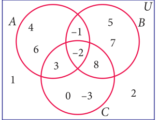

-
Using the adjacent Venn diagram, find the following sets:
(i) \(A - B\) (ii) \(B - C\) (iii) \(A' \cup B'\)
(iv) \(A' \cap B'\) (v) \((B \cup C)'\)
(vi) \(A - (B \cup C)\) (vii) \(A - (B \cap C)\)
-
If \(K = \{a, b, d, e, f\}\), \(L = \{b, c, d, g\}\) and \(M = \{a, b, c, d, h\}\), then find the following:
- \(K \cup (L \cap M)\)
- \(K \cap (L \cup M)\)
- \((K \cup L) \cap (K \cup M)\)
- \((K \cap L) \cup (K \cap M)\) and verify distributive laws.
-
If \(A = \{x : x \in \mathbb{Z}, -2 < x \le 4\}\), \(B = \{x : x \in \mathbb{W}, x \le 5\}\), \(C = \{-4, -1, 0, 2, 3, 4\}\), then verify \(A \cup (B \cap C) = (A \cup B) \cap (A \cup C)\).
-
Verify \(A \cup (B \cap C) = (A \cup B) \cap (A \cup C)\) using Venn diagrams.
-
If \(A = \{b, c, e, g, h\}\), \(B = \{a, c, d, g, i\}\) and \(C = \{a, d, e, g, h\}\), then show that \(A - (B \cap C) = (A - B) \cup (A - C)\).
-
If \(A = \{x : x = 6n, n \in \mathbb{W} \text{ and } n < 6\}\), \(B = \{x : x = 2n, n \in \mathbb{N} \text{ and } 2 < n \le 9\}\) and \(C = \{x : x = 3n, n \in \mathbb{N} \text{ and } 4 \le n < 10\}\), then show that \(A - (B \cap C) = (A - B) \cup (A - C)\).
-
If \(A = \{-2, 0, 1, 3, 5\}\), \(B = \{-1, 0, 2, 5, 6\}\) and \(C = \{-1, 2, 5, 6, 7\}\), then show that \(A - (B \cup C) = (A - B) \cap (A - C)\).
-
If \(A = \left\{y : y = \dfrac{a+1}{2}, a \in \mathbb{W} \text{ and } a \le 5\right\}\), \(B = \left\{y : y = \dfrac{2n-1}{2}, n \in \mathbb{W} \text{ and } n < 5\right\}\) and \(C = \left\{-1, -\dfrac{1}{2}, 1, \dfrac{3}{2}, 2\right\}\), then show that \(A - (B \cup C) = (A - B) \cap (A - C)\).
-
Verify \(A - (B \cap C) = (A - B) \cup (A - C)\) using Venn diagrams.
-
If \(U = \{4, 7, 8, 10, 11, 12, 15, 16\}\), \(A = \{7, 8, 11, 12\}\) and \(B = \{4, 8, 12, 15\}\), then verify De Morgan's Laws for complementation.
-
Verify \((A \cap B)' = A' \cup B'\) using Venn diagrams.